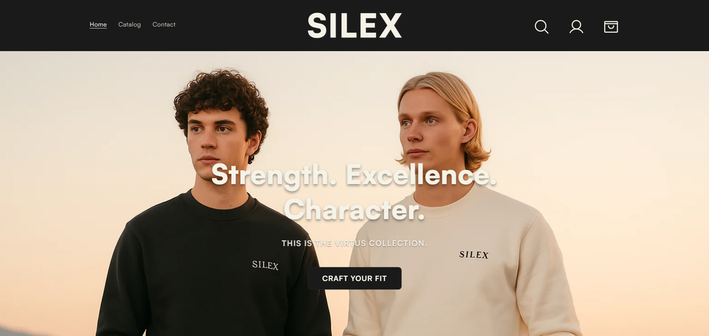

Konseptutvikling og Programmering
Her finner du det jeg har gjort angående Konseptutvikling og Programmering faget
Musikkfestival Hjemmeside

Teoretisk musikkfestival promotert ved bruk av en hjemmeside laget i html og css
Trykk på bildet for å sjekke den ut!
Interaktiv Historie

Interaktiv laget med bruk av html, css og javascript sammen med Anders.
Trykk på bildet for å sjekke den ut!
Musikkfestival Hjemmeside
Min egen hjemmesiden laget for en kleslinje jeg holder på å lage. Den er laget ved bruk av shopify create som en grunnleggende mal, og deretter tilpasset med html, css og litt javascript for å endre en del ting. Payment options er ikke fullført, venstre side av headeren er ikke ferdig, login pagen er default, og ckeckout siden mangler
Trykk på bildet for å sjekke den ut! (Passordet er haha1)